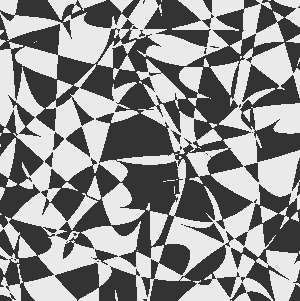

Your browser does not support SVG.
Twitter
Instagram
GitHub
YouTube
Real-Time Stats & Milestones
Interactive Terminal
Welcome to the Jams2Blues Interactive Terminal Type 'help' to see available commands...
NFT & Multimedia Showcase
